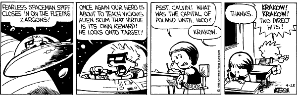

< < < Back
Can We Attain Certitude Through Our Perceptions? – Return Of Kings
Paschal greetings to the men of ROK! This week, we continue the philosophical series upon certitude.
Last week, we discussed how truth subsists in a judgment where there is a real correspondence between a “thing” (Latin res) and an intellection (perception/understanding); I noted the difference between the objective and subjective element in the judgment of Truth, with an emphasis on dispelling the prejudicial assumption we have in modernity, by which “objective” and “subjective” correspond most closely to “true” and “false.” Rather, objective truth is the truth of the “thing’s” side in this judgment, and subjective truth is the truth of the intellection.
Thus, a judgment may be true before we are certain of it; moreover, certainty is not an emotional feeling of “sureness,” but is the result of reflection, whereby we become fully aware of the actual truthfulness of a judgment—thus, certainty does not exist where a judgment is false, no matter how certain one “feels” about it. We remember putting our keys in our pocket; we judge it to be true, that our keys are in our pocket; and, truly, they are. Still, we put our hands in our pocket and feel them—now we are certain of the truth of our judgment. Truth or untruth is in this sense independent from our certain knowledge; our judgment was true before we were certain.

Okay, maybe truth is not quite this independent from our certain knowledge.
Contrarily, we feel sure that we have seen something coming at us from the corner of our eye, and we flinch, wheeling around to see what it is; actually, there was nothing there—probably just a fleeting shadow or darting bird. We felt sure that something was coming at us (indeed, this feeling was stronger than our assuredness that our keys were in our pocket), but further examination proved us wrong.
Certitude is thus the result of reflection upon the true judgments that we make, whereby their truthfulness becomes evident and confirmed for us. Evidence, etymologically, comes from e vidente (“from the perceiver/seer”)—i.e., something manifest, and plainly seen. Truth is not a mere apprehension, but a judgment; certitude is not a feeling, but a verification of that judgment on the basis of evidence, i.e., of things which are manifest.
The problem then becomes: What is manifest? What is evident? A philosophical analysis arrives at two basic principles that bear upon this problem; but for most modern men with modern prejudices, the mind is likely to pose a false problem, before it gets to these. Cardinal Mercier mentions that, since the time of Descartes, the question is usually posed: “Is human reason able to know things as they really are? Or, in other words: can we attain to a consciousness that our ideas are conformable to things as they are in themselves? How can the mind arrive at an assurance of this conformity?” He rejects this problem on sensible grounds.
First, he points out that this is an incomplete formulation of the problem, since the main concern we have in discussing our certitude of objective truths, is whether the relations we perceive between things, exist apart from our perception of them. I.e., rather than wondering whether you and I see violet in the same way is not the primary concern in this context, but whether whatever is manifest to me as violet, is an actually extant thing whether I am perceiving it or not. Mathematical truths can sometimes illustrate this better: are 2 and 2 equivalent to four, whether I am perceiving these quantities or not? Such relations as these are more easily understood as concepts which are less filtered by our perceptions.
We already know perception differs; but what of the perceived phenomenon itself?
More importantly, he points out that “a thing as it exists considered without reference to our knowledge is, as far as we are concerned, as if it did not exist, a pure non-entity.” Not because the thing does not/cannot exist apart from our knowledge, but because it is an absurdity to talk about our knowledge of it apart from our knowledge of it. “It is, then, an absurdity to try, under these conditions, to form a comparison between a mental representation [i.e., our knowledge of the thing in our minds] and the-thing-in-itself.”
Correlating to this, he points out that “a cognition is an immanent act which necessarily partakes of the nature of the subject knowing,” in conformity with the maxim of St. Thomas: cognitio est in cognoscente ad modum cognoscentis (“the thought process is in the thinker according to the thinker’s own manner”). That is to say, we have only one tool for perceiving and thinking—the human intellect—and there is no such thing as an exact identity between our thought process, and the thing of which we think; one is a thing, the other is a mental representation, or perception, of the thing. That thing is perceived and represented to us according to the manner of our own nature. I perceive colors based on the nature of the eye and the mind’s capacity for mentally representing these sense impressions to me; and even the abstract concepts I can imagine in the mind, occur according to the nature of the human mind. I don’t doubt that an angel, for example, perceives objects differently from me, having an entirely different nature, and therefore a different manner of perception and manner of cognition.

Saint Benedict’s Perception Transfigured by an Intellection of the Divine Light
I see a red ball and my mind represents it to me in a certain way; far be it from me to think that some other entity would perceive or mentally represent its perceptions in the same way. For me, what that object is-in-itself, abstracted absolutely from my knowledge of it, is a closed book.
All that matters, is whether my perception and judgment corresponds to something real, though I can only approach that real object according to my own nature and manner of perception and of cognition. Thus, as the Cardinal points out, the real problems of Criteriology resolve into two: the problem of the form and matter of the judgment.
The first, the form of the judgment, is a question of the mental synthesis by which we affirm the agreement of the subject and predicate in our judgment. Some (like Kant) say that the perception of an agreement of the two terms in a judgment (i.e., two and two on the one hand, and four on the other) is purely determined by the nature of the thinking subject. The Cardinal’s opinion is that the impression of an identity or correspondence between these two terms, is moved by something outside the thinking subject—i.e., it is due to a manifestation of an objective relation, to a fact that the concept “two and two” really corresponds to “four,” and the subjective thinker merely acknowledges this according to his own manner.
The Cardinal is careful to point out, here, that this question of the form of the judgment is a separate issue from whether those concepts are really extant things. So, for example, perhaps there is no such thing as “two” or “four” in the objective order of things, and these exist only as conceptualizations represented to ourselves in the mind. The question then, is whether the equivalence we perceive between the conceptualizations “two and two” and “four” results from a real relation of the concepts as such, or whether even the judgment of their equivalence is a creation of the thinking subject. Or: perhaps there is no perfect sphere really existing anywhere; yet the mind, reflecting upon mathematical and geometric principles, sees that the volume of such a thing would be equivalent to four-thirds of pi times the cube of its radius. This question of the form of our mental judgment, asks whether the mental synthesis by which one perceives the identity in that relation is determined by the nature of the thinking subject, or whether the relation of the terms in that judgment exists objectively. This question is the question of the objectivity of the ideal order (i.e., the objectivity of ideas themselves).
It can be difficult to think of an apt image for illustrating the question of the objectivity of the ideal order in the mind.
The second question, regards the matter of the judgment. That is to say, do our concepts correspond to things that really exist? Are there spheres? Do the concepts of “two” and “four” correspond to any real thing? As the Cardinal puts it: “Are the terms of our judgments pure creations of the mind, with no counterpart in real fact, or are they trustworthy representations of objects which really exist? This second problem is that of the objective reality of our concepts.”
So, our examination of certitude and truth will focus upon that. But something must be determined before we may do that effectively. As the Cardinal says: “The object of epistemology is to analyse and to verify our knowledge of truth, and so of every truth. Consequently it is both legitimate and necessary to ask whether at the outset we may presuppose anything at all, and what we may presuppose. This is the question concerning the initial state of the mind of one inquiring into the main problem of certain knowledge.”
I will say that this is one of the things that appealed so much to me about the authentic, traditional Christianity. When I was an atheist, I casually assumed that Christians acted on “faith,” which I imagined was blind by definition, and made all kinds of unwarranted assumptions. But when I discovered the Fathers of the Church, and then especially the Scholastic Doctors, I saw that an appreciation of clear, true, careful thinking was everywhere in evidence. Here in Mercier, and in many other authors (such as St. Thomas), I always found great care in examining first principles, ensuring that unwarranted assumptions were being avoided, careful attention to the implications of ideas, a readiness to play devil’s advocate, etc. In fact, to be blunt, I saw that the Christians, contrary to popular myth, seemed more open to critical self-examination than other thinkers. I have profited immensely from this example, and the fruits it has borne.
The Venerable Bede, whose care to find accurate information was admirable in his time.
I hope you all are enjoying the series, and do not find it too boring or incomprehensible. I am learning as we go along, too, so I hope I am able to explain things more or less clearly. Let me know!
Read More: How Philosophy Can Revive Your Dormant Critical Thinking Skills